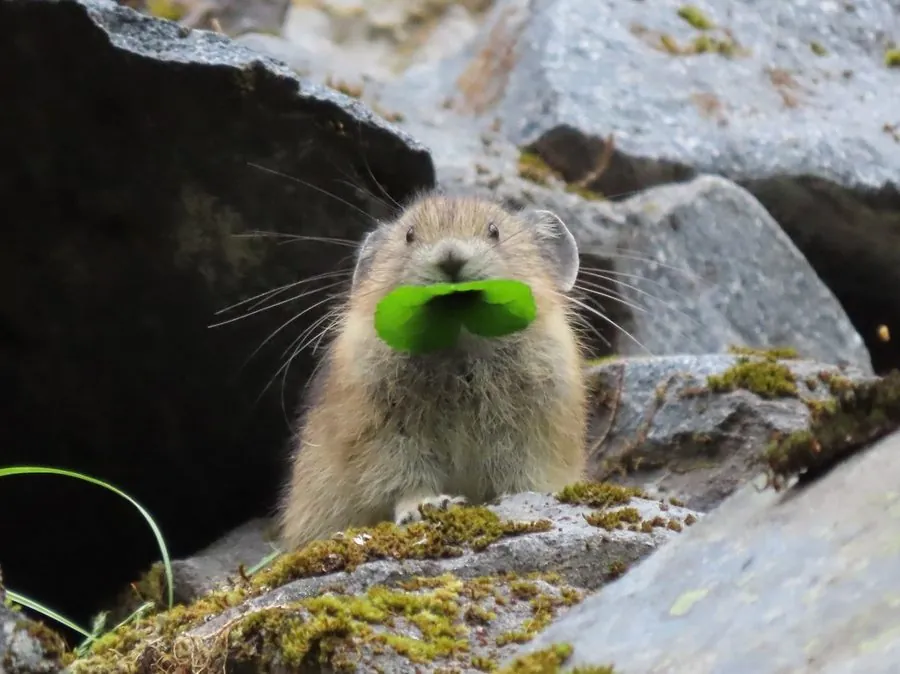

哺乳动物 · 动物界
北美鼠兔 Ochotona princeps

北美西部高山岩屑坡上的小型兔形目动物，没有尾巴、耳朵圆短，夏季收割青草晒成干草堆，对高温非常敏感。
- 分类
- 门脊索动物门纲哺乳纲目兔形目科鼠兔科属鼠兔属
- 栖息环境
- 北美西部高山岩屑坡、流石滩与岩石缝隙
- 地理分布
- 加拿大西部和美国西部的落基山、内华达山等高山地区
- 保护级别
- IUCN 无危（LC）；非中国分布物种
物种志
北美鼠兔体长 15–20 厘米，体重 120–180 克，雌性略大。它的身体圆胖，没有尾巴，耳朵圆而短，毛色为灰褐至黄褐色，腹部浅色；四肢短小，前后肢长度接近，适合在岩石间跳跃。
北美鼠兔分布于北美洲西部的落基山、内华达山等高山地区，栖息在海拔较高的岩屑坡和流石滩。它以草、苔藓、地衣和灌木为食，夏季会收割青草和植物，摆放在岩石上晒干，再堆成干草垛储存，供冬季食用。鼠兔不冬眠，靠干草堆和厚厚的雪层度过寒冬。它对高温十分敏感，气温升高时会躲进岩石缝隙。雌性妊娠期约 30 天，每年 1–2 胎，每胎 2–4 仔，寿命约 3–7 年。北美鼠兔被列为无危，但低海拔种群受气候变暖威胁。
形态与习性
- 食性草、苔藓、地衣与灌木
- 体长15–20 cm
- 体重120–180 g
- 寿命3–7 年
- 繁殖妊娠约 30 天，每胎 2–4 仔
- 储存夏季晒制干草堆
趣味知识
- 北美鼠兔夏季把青草晒成干草堆，留作冬季食物。
- 它没有尾巴，耳朵圆短，看起来像一只小豚鼠。
- 鼠兔对高温敏感，气候变暖迫使种群向高海拔迁移。